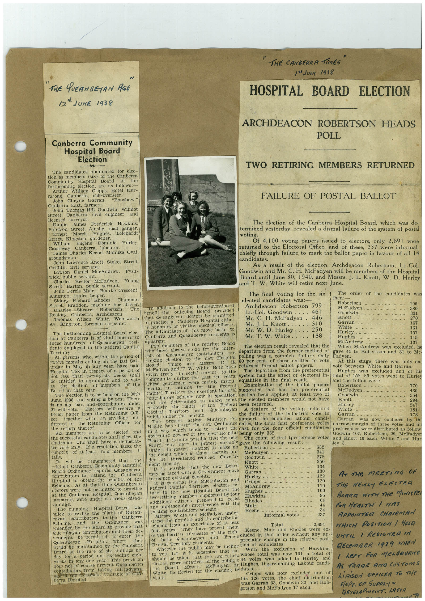

Book 1 · scan 009


Description
Transcription
Context
Review notes
Compare the machine draft with the scan. Handwriting and names need human review.
Artifacts
Edit the artifacts field in this note’s frontmatter to change these records. This summary is generated.
B01-S009-A01 — Newspaper clipping & Handwritten note — Book 1, scan 009
Types: Newspaper clipping, Handwritten note
Scope: Whole scanned page; individual items can be split out during review.
Caption: Not mapped yet.
Caption source: Not recorded yet.
Caption status: unmapped
Machine transcription
" THE QUEANBEYAN AGE 12ª JUNE 1938 " THE CANBERRA TiMES 1 JuLy 1938 HOSPITAL BOARD ELECTION ARCHDEACON ROBERTSON HEADS POLL Canberra Community Hospital Board Election The candidates nominated for elec- tion as members (six) of the Canberra Community Hospital Board at forthcoming election, are as follows: Arthur William Cripps. Hotel Kur- ra jong. Canberra, sub-overseer. John Cheyne Garran, "Bonshaw." Canberra East, farmer. John Thomas Hill Goodwin, Wilmot Street, Canberra, civil engineer and licensed surveyor. Dinnie James Frederick Hawkins. Paterson Street, Ainslie, road ganger. Ernest Morris Hughes, Leichardt Street: Kingston, gardener. William Dominic Hurley. Canberra. labourer. James Charles Keene, Manuka Oval, groundsman. John Lawrence Knott, Stokes Street, Griffith, civil servant. Daniel MacAndrew, Fysh- wick, public servant. Charles Hector McFadyen, Young Street, Barton, public servant. Jchn Ferels Muir. Bourke Crescent, Kingston, trades helper. Sidney Richard Rhodes, Chapman Street, Braddon, machme noe anver Charles Shearer Robertson, The Rectory, Canberra, Thomas Wilson Archdeacon. White. Wentworth Av., Kingston, foreman carpenter. The forthcoming Hospital Board elec- tion at Canberra is of vital concern to these hundreds of Queanbeyan TeST dents employed in the Federal Capital Territory. All persons, whe, within the period of twelve months ending on the last Sat- urdav in May in any year. have paid Hespital Tax in respect of a period of not less -8020 twenty-six weeks shall be entitled to enrolment Br the election and to vote of members of the rd in that year The e'ection is to be held on the 30th June, 1938. and voting is by post. There is no age bar. and contributors under Electors will receive ballot paper from the Returning om- Cer. together with ad- dressed to the Returning Officer tor the return thereof. Six members are to be elected and the successful candidates shall elect the chairman. who shall have a deliberat- ive vote only. If a resolution lacks the surpot of at least four members, it fails. will be remembered that • iginal Canberra Community Hespital Board Ordinance required Queanbeyan contributors to attend the Canberra Ho pital to obtain the benefits of the Scheme. As at that time Queanbevan cectors were not permitted to practice at the Canberra Hospital. Queanbeyan 'axpayers were under a serious disad- vantage. The ou going Hospital Board was quick to realise the p'ieht of Quean- hevan contributors to the canoema Scheme and the Ordinance was amended by the Board to provide that Gue nbeyan contributors and their de- nendents be permitted to enter the Queanbeyan Hespital. where they would be maintained by the Canberra Board at the ra'e of six shillings per day for a period not exceeding eight weeks in any one year This provision docs not of course prevent Queanbevan contributors frem taking fall advant of me reatment available at can Be a Hopital TWO RETIRING MEMBERS RETURNED FAILURE OF POSTAL BALLOT The election of the Canberra Hospital Board, which was de- termined yesterday, revealed a dismal failure of the system of postal voting. Of 4,100 voting papers issued to electors, only 2,69l were returned to the Electoral Office, and of these, 237 were informal, chiefly through failure to mark the ballot paper in favour of all 14 candidates. As a result of the election, Archdeacon Robertson, Lt.-Col. Goodwin and Mr. C. H. McFadyen will be members of the Hospital Board until June 30, 1940, and Messrs. J. L. Knott, W. D. Hurley and T. W. White will retire next June. The final voting for the six 1 The order of the candidates was elected candidates then:- was: mn addition to the beforementioned Robertson henefit the outgoing Board Archdeacon Robertson 799 McFadyen 706 380 provided Lt.-Col. Goodwin.... 461 that Queanbevan destors be permitted Goodwin *o practice at Canberra Hespital either Mr. C. H. McFadyen 446 Knott 270 *s honorary or visiting medical officers. Mr. I. L. Knott.. 310 Garran The advantages of this move both to Mr. W. D. Hurley 250 White 167 Canberra and Queanbeyan residents is Hurley 161 Hughes 157 Mr. T. W. White 188 apparent. Two members of the retiring Board McAndrew 145 137 who have alwavs stood fer the inter- The election result revealed that the . When McAndrew was excluded, he departure from the former method of ests of Queanbeyan contributo"s gave 45 to Robertson and 31 to Mc. election to tae new Hospital polling was a complete failure. Only Fadyen. Board. There ate Messis 60 per cent. of those entitled to vote At this stage, there was only one McFadven and T W. White. Both have retured formal ballot papers. vote between White and Garran. given free'y in social service to the The departure from the preferential Hughes was excluded and of his communit during the past ten vears. system had the effect of electoral in- total of 158, 85 votes went to Hurley These gentlemen were mainly instru- equalities in the final result. and the totals were: mental of the ballot in gaining for Federal Examination papers Robertson 770 Capit-1 Territory the excellent hosnital suggested that had the preferential McFadyen 430 contributory scheme now in operation. system been applied, at least two of Goodwin ... 394 determined to guard most the elected members would not have Knott and are zealously the rights of the Federal been returned. 294 an? Queanbeyan Hurley 247 A feature of the voting indicated White Territory 181 Capi al public under the cheme. the failure of the industrial vote to Garran ... present acting Minister for support the endorsed labour candi- Garran 178 was now excluded by the Health has -Itered the new Ordinance dates, the total first preference voles in a way which tends to restrict the cast for the four official candidates narrow margin of three votes and his preferences were distributed as follow governing powers of the new He pital being only 332. Godwin 107, Robertson, 29, McFadyer Beard. I is nuite possible that the new The count of first preterence votes and Knott 16 each, White 7 and Hur Bcard may have to protest strongly gave the following result: ley 3. against increased taxation to make up Robertson …. … 632 the deficit which is almost certain un- McFadyen 341 der the threatened reduced Govern- Goodwin 278 ment subsidy. Knott .... It is possible that the new Board 250 may be facer with a Grvernment move vy nute .. 134 Garran .... 130 to reduce existing benefits. It is es ential that Queanbevan and Lionley.... 122 AT THE MEETING OF Federal Capital Territory electors e- Cripps 120 turn to the new Hospital Board the McAndrew 110 THE NEWLY ELECTRA twe retiring members supported by four Hughes.... 100 Hawkins.. 95 additicnal citizens prepared to resist 64 any unreasonable interference with the Rhodes........ BOARE WITH THE MINISTE Muir 44 FOR HERATH / WAS existing contributory scheme. Keene 34 White and McFadyen under. Informal votes 237 APPOINTER CHRIRMAN •tond the hospital and its contributor cheme from an exerience of at leas Total 2,691 They have proved them Keene, Muir and Rhodes were ex- WHICH POSITION / HELD four years. se ves fearles advecates of the right of beth Gneanbevan and Federa cluded in that order without any ap-i UNTIL 1 RESIGNEL IN preciable change in the relative posi Canital Territory residents. Wheever the public may be incline tion of candidates. to vote fer it is siggested that car With the exclusion of Hawkins, DECEMBER 1939 WHEN shou'd be taken that the iwo retirin Whose total was now 101, a total of -lecter representatives of the public 44 votes was added to Hurley and I LEFT FOR MELBOURNe Board. Mess''s. McFadyen an Hughes, the remaining Labour candi- AS TRARE ANA CUSTOMS White, be clected for the ensuing twdates. Cripps was now excluded and of years. his 126 votes, the chief distribution LIAISON OFFICER TO THE was Garran 33, Goodwin 32, and Rob- ertson and McFadyen 17 each. REPT. OF SUPPLY" REYELOPMENT. LATER